가스기사 (2018-04-28 기출문제)
1과목: 가스유체역학
1. 동점성계수가 각각 1.1×10-6m2/s, 1.5×10-5m2/s인 물과 공기가 지름 l0㎝인 원형관 속을 10㎝/s의 속도로 각각 흐르고 있을 때, 물과 공기의 유동을 옳게 나타낸 것은?
- 물 : 층류, 공기 : 층류
- 물 : 층류, 공기 : 난류
- 물 : 난류, 공기 : 층류
- 물 : 난류, 공기 : 난류
(정답률: 70%)

2. 내경이 50mm인 강철관에 공기가 흐르고 있다. 한 단면에서의 압력은 5atm, 온도는 20℃, 평균유속은 50m/s이었다. 이 관의 하류에서 내경이 75mm인 강철관이 접속되어 있고 여기에서의 압력은 3atm, 온도는 4O℃이다. 이때 평균 유속을 구하면 약 얼마인가? (단, 공기는 이상기체라고 가정한다.)
- 40m/s
- 50m/s
- 60m/s
- 70m/s
(정답률: 40%)
3. 다음 중 동점성계수와 가장 관련이 없는 것은? (단, μ는 점성 계수, P는 밀도, F는 힘의 차원, T는 시간의 차원, L은 길이의 차원을 나타낸다.)
- μ/ρ
- stokes
- cm2/s
- FTL-2
(정답률: 62%)
4. 제트엔진 비행기가 400m/s로 비행하는데 30㎏/s의 공기를 소비한다. 4900N의 추진력을 만들 때 배출되는 가스의 비행기에 대한 상대 속도는 약 몇 m/s인가? (단, 연료의 소비량은 무시한다.)
- 563
- 583
- 603
- 623
(정답률: 29%)
5. 지름이 2m인 관속을 7200m3/h로 흐르는 유체의 평균유속은 약 몇 m/s인가?
- 0.64
- 2.47
- 4.78
- 5.36
(정답률: 59%)
6. 다음 중 마하수 (mach number)를 옳게 나타낸 것은?
- 유속을 음속으로 나눈 값
- 유속을 광속으로 나눈 값
- 유속을 기체분자의 절대속도 값으로 나눈 값
- 유속을 전자속도로 나눈 값
(정답률: 83%)
7. 어떤 액체의 점도가 20g/㎝·s라면 이것은 몇 Pa·s에 해 당하는가?
- 0.02
- 0.2
- 2
- 20
(정답률: 45%)
8. 동일한 펌프로 동력을 변화시킬 때 상사조건이 되려면 동력은 회전수와 어떤 관계가 성립하여야 하는가?
- 회전수의 1/2승에 비례
- 회전수와 1대 1로 비례
- 회전수의 2승에 비례
- 회전수의 3승에 비례
(정답률: 61%)
9. 충격파의 유동특성을 나타내는 Fanno 선도에 대한 설명 중 옳지 않은 것은?
- Fanno 선도는 에너지방정식, 연속방정식, 운동량방정식, 상태 방정식으로부터 얻을 수 있다.
- 질량유량이 일정하고 정체 엔탈피가 일정한 경우에 적용된다.
- Fanno 선도는 정상상태에서 일정단면유로를 압축성 유체가 외부와 열교환하면서 마찰 없이 흐를 때 적용된다.
- 일정질량유량에 대하여 Mach 수를 Parameter로 하여 작도한다.
(정답률: 61%)
10. 비압축성 유체가 수평 원형관에서 층류로 흐를 때 평균유속과 마찰계수 또는 마찰로 인한 압력차의 관계를 옳게 설명한 것은?
- 마찰계수는 평균유속에 비례한다.
- 마찰계수는 평균유속에 반비례한다.
- 압력차는 평균유속의 제곱에 비례한다.
- 압력차는 평균유속의 제곱에 반비례한다.
(정답률: 35%)
11. 축류펌프의 특성 아닌 것은?
- 체절상태로 운전하면 양정이 일정해진다.
- 비속도가 크기 때문에 회전속도를 크게 할 수 있다.
- 유량이 크고 양정이 낮은 경우에 적합하다.
- 유체는 임펠러를 지나서 축방향으로 유출된다.
(정답률: 42%)
12. 파이프 내 점성흐름에서 길이방향으로 속도분포가 변하지 않는 흐름을 가리키는 것은?
- 플러그흐름(plug flow)
- 완전발달된 흐름 (fully developed flow)
- 층류(laminar flow)
- 난류 (turbulent flow)
(정답률: 76%)
13. 유체 유동에서 마찰로 일어난 에너지 손실은?
- 유체의 내부에너지 증가와 계로부터 열전달에 의해 제거되는 열량의 합이다.
- 유체의 내부에너지와 운동에너지의 합의 증가로 된다.
- 포텐셜 에너지와 압축일의 합이 된다.
- 엔탈피의 증가가 된다.
(정답률: 63%)
14. 항력 (drag force)에 대한 설명 중 틀린 것은?
- 물체가 유체 내에서 운동할 때 받는 저항력을 말한다.
- 항력은 물체의 형상에 영향을 받는다.
- 항력은 유동에 수직방향으로 작용한다.
- 압력항력을 형상항력이라 부르기도 한다.
(정답률: 65%)
15. 관 내부에서 유체가 흐를 때 흐름이 완전난류라면 수두손실은 어떻게 되겠는가?
- 대략적으로 속도의 제곱에 반비례한다.
- 대략적으로 직경의 제곱에 반비례하고 속도에 정비례한다.
- 대략적으로 속도의 제곱에 비례한다.
- 대략적으로 속도에 정비례 한다.
(정답률: 63%)
16. 축류펌프의 날개 수가 증가할 때 펌프성능은?
- 양정이 일정하고 유량이 증가
- 유량과 양정이 모두 증가
- 양정이 감소하고 유량이 증가
- 유량이 일정하고 양정이 증가
(정답률: 53%)
17. 그림과 같은 관에서 유체가 등엔트로피 유동할 때 마하수 Ma＜1이라 한다. 이때 유동방향에 따른 속도와 압력의 변화를 옳게 나타낸 것은?
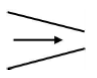
- 속도-증가, 압력-감소
- 속도-증가, 압력-증가
- 속도-감소, 압력-감소
- 속도-감소, 압력-증가
(정답률: 73%)
18. 그림과 같은 사이펀을 통하여 나오는 물의 질량 유량은 약 몇 ㎏/s인가? (단, 수면은 항상 일정하다.)
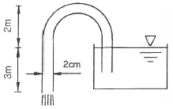
- 1.21
- 2.41
- 3.61
- 4.83
(정답률: 58%)
19. 등엔트로피 과정 하에서 완전기체 중의 음속을 옳게 나타낸 것은? (단, E는 체적탄성계수, R 은 기체상수, T는 기체의 절대온도, P는 압력, k는 비열비이다.)
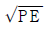
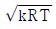
- RT
- PT
(정답률: 82%)
20. 원관 내 유체의 흐름에 대한 설명 중 틀린 것은?
- 일반적으로 층류는 레이놀즈수가 약 2100 이하인 흐름이다.
- 일반적으로 난류는 레이놀즈수가 약 4000이상인 흐름이다.
- 일반적으로 관 중심부의 유속은 평균유속보다 빠르다.
- 일반적으로 최대속도에 대한 평균속도의 비는 난류가 층류 보다 작다.
(정답률: 76%)
2과목: 연소공학
21. 이상 오토사이클의 열효율이 56.6%이라면 압축비는 약 얼마 인가? (단, 유체의 비열비는 1.4로 일정하다.)
- 2
- 4
- 6
- 8
(정답률: 44%)
22. 정상 및 사고(단선, 단락, 지락 등) 시에 발생하는 전기불꽃, 아크 또는 고온부에 의하여 가연성가스가 점화되지 않는 것이 점화시험, 기타 방법에 의하여 확인된 방폭구조의 종류는?
- 본질안전방폭구조
- 내압방폭구조
- 압력방폭구조
- 안전증방폭구조
(정답률: 63%)
23. 부탄(C4H10) 2Nm3를 완전 연소시키기 위하여 약 몇 Nm3의 산소가 필요한가?
- 5.8
- 8.9
- 10.8
- 13.0
(정답률: 47%)
24. 탄화수소 (CmHn) 1mol이 완전 연소될 때 발생하는 이산화탄소의 몰(mol) 수는 얼마인가?
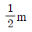
- m
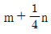
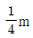
(정답률: 73%)
25. 연소범위에 대한 설명으로 틀린 것은?
- LFL(연소하한계)은 온도가 100℃ 증가할 때마다 8% 정도 감소한다.
- UFL( 연소상한계 )은 온도가 증가하여도 거의 변화가 없다.
- 대단히 낮은 압력(＜50㎜Hg)을 제외하고 압력은 LFL(연소하한계)에 거의 영향을 주지 않는다.
- UFL( 연소상한계)은 압력이 증가할 때 현격히 증가된다.
(정답률: 51%)
26. 내압방폭구조로 전기기기를 설계할 때 가장 중요하게 고려해야 할 사항은?
- 가연성가스의 연소열
- 가연성가스의 발화열
- 가연성가스의 안전간극
- 가연성가스의 최소점화에너지
(정답률: 78%)
27. 1mol의 이상기체 Cv＝3/(2R)가 40℃, 35atm으로부터 1atm까지 단열가역적으로 팽창하였다. 최종 온도는 약 몇 ℃인가?
- - 100℃
- -l85℃
- - 200℃
- -285℃
(정답률: 51%)
28. 고발열량(HHV)와 저발열량(LHV)를 바르게 나타낸 것은? (단, n는 H2O의 생성몰수, △Hv는 물의 증발잠열이다.)
- LHV＝HHV＋△Hv
- LHV＝HHV＋n△Hv
- HHV＝LHV＋△Hv
- HHV＝LHV＋n△Hv
(정답률: 59%)
29. 기체동력 사이클 중 2개의 단열과정과 2개의 등압과정으로 이루어진 가스터빈의 이상적인 사이클은?
- 오토사이클 (Otto cycle)
- 카르노사이클 (Carnot cycle)
- 사바테사이클 (Sabathe cycle)
- 브레이턴사이클 (Brayton cycle)
(정답률: 67%)
30. 가스가 노즐로부터 일정한 압력으로 분출하는 힘을 이용하여 연소에 필요한 공기를 흡인하고, 혼합관에서 혼합한 후 화염공에서 분출시켜 예혼합연소시키는 버너는?
- 분젠식
- 전 1차 공기식
- 블라스트식
- 적화식
(정답률: 66%)
31. 분진 폭발의 발생 조건으로 가장 거리가 먼 것은?
- 분진이 가연성이어야 한다.
- 분진 농도가 폭발범위 내에서는 폭발하지 않는다.
- 분진이 화염을 전파할 수 있는 크기 분포를 가져야 한다.
- 착화원, 가연물, 산소가 있어야 발생한다,
(정답률: 73%)
32. 공기비가 작을 때 연소에 미치는 영향이 아닌 것은?
- 연소실내의 연소온도가 저하한다.
- 미연소에 의한 열손실이 증가한다.
- 불완전연소가 되어 매연발생이 심해진다.
- 미연소 가스로 인한 폭발사고가 일어나기 쉽다.
(정답률: 56%)
33. 이상기체에서 등온과정의 설명으로 옳은 것은?
- 열의 출입이 없다.
- 부피의 변화가 없다.
- 엔트로피 변화가 없다.
- 내부에너지의 변화가 없다.
(정답률: 54%)
34. 산소(O2)의 기본특성에 대한 설명 중 틀린 것은?
- 오일과 혼합하면 산화력의 증가로 강력히 연소한다.
- 자신은 스스로 연소하는 가연성이다.
- 순산소 중에서는 철, 알루미늄 등도 연소되며 금속산화물을 만든다.
- 가연성 물질과 반응하여 폭발할 수 있다.
(정답률: 78%)
35. 압력이 287kPa일 때 체적 1m3의 기체질량이 2㎏이었다. 이때 기체의 온도는 약 몇 ℃가 되는가? (단, 기체상수는 287J/㎏·K이다.)
- 127
- 227
- 447
- 547
(정답률: 57%)
36. 다음 중 기체 연료의 연소 형태는?
- 표면연소
- 분해연소
- 등심연소
- 확산연소
(정답률: 81%)
37. 다음 [보기]는 액체연료를 미립화시키는 방법을 설명한 것이다. 옳은 것을 모두 고른 것은?
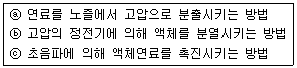
- ⓐ
- ⓐ, ⓑ
- ⓑ, ⓒ
- ⓐ, ⓑ, ⓒ
(정답률: 72%)
38. 열역학 제1법칙에 대하여 옳게 설명한 것은?
- 열평형에 관한 법칙이다.
- 이상기체에만 적용되는 법칙이다.
- 클라시우스의 표현으로 정의되는 법칙이다.
- 에너지 보존법칙 중 열과 일의 관계를 설명한 것이다.
(정답률: 69%)
39. 오토사이클 (Otto cycle)의 선도에서 정적가열 과정은?
- 1 → 2
- 2 → 3
- 3 → 4
- 4 → 1
(정답률: 54%)
40. 고체연료에서 탄화도가 높은 경우에 대한 설명으로 틀린 것은?
- 수분이 감소한다.
- 발열량이 증가한다.
- 착화온도가 낮아진다.
- 연소속도가 느려진다.
(정답률: 41%)
3과목: 가스설비
41. 가스용기 저장소의 충전용기는 항상 몇 ℃이하를 유지하여야 하는가?
- -10℃
- 0℃
- 40℃
- 60℃
(정답률: 84%)
42. 다음 [보기]에서 설명하는 암모니아 합성탑의 종류는?
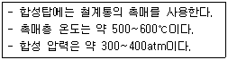
- 파우서법
- 하버-보시법
- 클라우드법
- 우데법
(정답률: 60%)
43. 고압가스 제조 장치 재료에 대한 설명으로 틀린 것은?
- 상온 상압에서 건조 상태의 염소가스에 탄소강을 사용한다.
- 아세틸렌은 철, 니켈 등의 철족의 금속과 반응하여 금속 카르보닐을 생성한다.
- 9% 니켈강은 액화 천연가스에 대하여 저온취성에 강하다.
- 상온 상압에서 수중기가 포함된 탄산가스 배관에 18-8 스테인리스강을 사용한다.
(정답률: 52%)
44. 부취제의 구비조건으로 틀린 것은?
- 배관을 부식하지 않을 것
- 토양에 대한 투과성이 클 것
- 연소 후에도 냄새가 있을 것
- 낮은 농도에서도 알 수 있을 것
(정답률: 72%)
45. 가스미터의 성능에 대한 설명으로 옳은 것은?
- 사용공차의 허용치는 ±10% 범위이다.
- 막식 가스미터에서는 유량에 맥동성이 있으므로 선편(先偏)이 발생하기 쉽다.
- 감도유량은 가스미터가 작동하는 최대유량을 말한다.
- 공차는 기기공차와 사용공차가 있으며 클수록 좋다.
(정답률: 56%)
46. 용기용 밸브는 가스 충전구의 형식에 따라 A형, B형, C형의 3종류가 있다. 가스 충전구가 암나사로 되어 있는 것은?
- A형
- B형
- A형, B형
- C형
(정답률: 79%)
47. 유량계의 입구에 고정된 터빈형태의 가이드 바디(guide body)가 와류현상을 일으켜 발생한 고유의 주파수가 piezo sensor에 의해 검출 되어 유량을 적산하는 방법으로서 고점도 유량 측정에 적합한 가스미터는?
- vortex 가스미터
- Turbine 가스미터
- Roots 가스미터
- swirl 가스미터
(정답률: 59%)
48. 저압식 액화산소 분리장치에 대한 설명이 아닌 것은?
- 충동식 팽창 터빈을 채택하고 있다.
- 일정 주기가 되면 1조의 축냉기에서의 원료공기와 불순 질소류는 교체된다.
- 순수한 산소는 축냉기 내부에 있는 사관에서 상온이 되어 채취된다.
- 공기 중 탄산가스로 가성소다 용액(약 8%)에 흡수하여 제거된다.
(정답률: 43%)
49. 가스조정기(Regulator)의 역할에 해당되는 것은?
- 용기 내 노의 역화를 방지한다.
- 가스를 정제하고 유량을 조절한다.
- 공급되는 가스의 조성을 일정하게 한다.
- 용기 내의 가스압력과 관계없이 연소기에서 완전 연소에 필요한 최적의 압력으로 감압한다.
(정답률: 56%)
50. 어느 가스탱크에 10℃, 0.5MPa의 공기 10㎏이 채워져 있다. 온도가 37℃로 상승한 경우 탱크의 채적변화가 없다면 공기의 압력 증가는 약 몇 kPa인가?
- 48
- 148
- 448
- 548
(정답률: 28%)
51. 양정 20m, 송수량 3m3/min일 때 축동력 15PS를 필요로 하는 원심펌프의 효율은 약 몇 %인가?
- 59%
- 75%
- 89%
- 92%
(정답률: 57%)
52. 아세틸렌(C2H2)에 대한 설명으로 틀린 것은?
- 아세틸렌은 아세톤을 함유한 다공물질에 용해시켜 저장한다.
- 아세틸렌 제조방법으로는 크게 주수식과 흡수식 2가지 방법이 있다.
- 순수한 아세틸렌은 에테르 향기가 나지만 불순물이 섞여 있으면 악취발생의 원인이 된다.
- 아세틸렌의 고압건조기와 충전용 교체밸브 사이의 배관, 충전용 지관에는 역화방지기를 설치한다.
(정답률: 60%)
53. 액화천연가스(LNG)의 유출 시 발생되는 현상으로 가장 옳은 것은?
- 메탄가스의 비중은 상온에서는 공기보다 작지만 온도가 낮으면 공기보다 크게 되어 땅위에 체류한다.
- 메탄가스의 비중은 공기보다 크므로 증발된 가스는 항상 땅위에 체류한다.
- 메탄가스의 비중은 상온에서는 공기보다 크지만 온도가 낮게되면 공기보다 가볍게 되어 땅위에 체류하는 일이 없다.
- 메탄가스의 비중은 공기보다 작으므로 증발된 가스는 위쪽으로 확산되어 땅위에 체류하는 일이 없다.
(정답률: 65%)
54. 합성천연가스(SNG) 제조 시 나프타를 원료로 하는 메탄합성공정과 관련이 적은 설비는?
- 탈황장치
- 반응기
- 수첨 분해탑
- CO 변성로
(정답률: 61%)
55. 고압가스 기화장치의 검사에 대한 설명 중 옳지 않은 것은?
- 온수가열 방식의 과열방지 성능은 그 온수의 온도가 80℃이다.
- 안전장치는 최고 허용압력 이하의 압력에서 작동하는 것으로 한다.
- 기밀시험은 설계압력 이상의 압력으로 행하여 누출이 없어야 한다.
- 내압시험은 물을 사용하여 상용압력의 2 배 이상으로 행한다.
(정답률: 57%)
56. 가스의 공업적 제조법에 대한 설명으로 옳은 것은?
- 메탄올은 일산화탄소와 수증기로부터 고압하에서 제조한다.
- 프레온 가스는 불화수소와 아세톤으로 제조한다.
- 암모니아는 질소와 수소로부터 전기로에서 구리촉매를 사용하여 저압에서 제조한다.
- 포스겐은 일산화탄소와 염소로부터 제조한다.
(정답률: 58%)
57. 구리 및 구리합금을 고압장치의 재료로 사용하기에 가장 적당한 가스는?
- 아세틸렌
- 황화수소
- 암모니아
- 산소
(정답률: 57%)
58. 가스의 호환성 측정을 위하여 사용되는 웨베지수의 계산식을 옳게 나타낸 것은? (단, WI는 웨베지수, Hg는 가스의 발열량 [kcal/m3], d는 가스의 비중이다.)
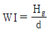
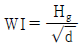
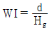
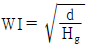
(정답률: 75%)
59. 접촉분해 공정으로 도시가스를 제조하는 공정에서 발열반응을 일으키는 온도로서 가장 적당한 것은? (단, 반응압력은 10기압이다.)
- 350℃ 이하
- 500℃ 이하
- 750℃ 이하
- 850℃ 이하
(정답률: 48%)
60. 흡입밸브 압력이 6MPa인 3단 압축기가 있다. 각 단의 토출 압력은? (단, 각 단의 압축비는 3이다.)
- 18, 54, 162MPa
- 12, 36, 108MPa
- 4, 16, 64MPa
- 3, 15, 63MPa
(정답률: 67%)
4과목: 가스안전관리
61. 산업통상자원부령으로 정하는 고압가스 관련 설비가 아닌 것은?
- 안전밸브
- 세척설비
- 기화장치
- 독성가스배관용 밸브
(정답률: 66%)
62. 차량에 고정된 탱크에서 저장탱크로 가스 이송작업 시의 기준에 대한 설명이 아닌 것은?
- 탱크의 설계압력 이상으로 가스를 충전하지 아니한다.
- LPG충전소 내에서는 동시에 2대 이상의 차량에 고정된 탱크에서 저장설비로 이송작업을 하지 아니한다.
- 플로트식 액면계로 가스의 양을 측정 시에는 액면계 바로 위에 얼굴을 내밀고 조작하지 아니한다.
- 이송전후에 밸브의 누출여부를 점검하고 개폐는 서서히 행한다.
(정답률: 65%)
63. LPG 용기 저장에 대한 설명으로 옳지 않은 것은?
- 용기보관실은 사무실과 구분하여 동일한 부지에 설치한다.
- 충전용기는 항상 40℃ 이하를 유지하여야 한다.
- 용기보관실의 저장설비는 용기집합식으로 한다.
- 내용적 30L 미만의 용기는 2단으로 쌓을 수 있다.
(정답률: 43%)
64. 액화석유가스 집단공급 시설에서 배관을 차량이 통행하는 폭 10m의 도로 밑에 매설할 경우 몇 m 이상의 깊이를 유지하여야 하는가?
- 0.6m
- 1m
- 1.2m
- 1.5m
(정답률: 58%)
65. 저장탱크에 의한 액화석유가스 저장소의 이·충전 설비 정전기 제거 조치에 대한 설명으로 틀린 것은?
- 접지저항 총합이 100 ℧ 이하의 것은 정전기제거 조치를 하지 않아도 된다.
- 피뢰설비가 설치된 것의 접지 저항값이 50℧ 이하의 것은 정전기 제거조치를 하지 않아도 된다.
- 접지접속선 단면적은 5.5mm2 이상의 것을 사용한다.
- 충전용으로 사용하는 저장탱크 및 충전설비는 반드시 접지한다.
(정답률: 63%)
66. 가스관련 사고의 원인으로 가장 많이 발생한 경우는? (단, 2017년 사고통계 기준이다.)
- 타공사
- 제품 노후, 고장
- 사용자 취급부주의
- 공급자 취급부주의
(정답률: 79%)
67. 가스 안전성평가기법에 대한 설명으로 틀린 것은?
- 체크리스트기법은 설비의 오류, 결함상태, 위험상황 등을 목록화한 형태로 작성하여 경험적으로 비교함으로써 위험성을 정성적으로 파악하는 기법이다.
- 작업자실수 분석기법은 사고를 일으키는 장치의 이상이나 운전자 실수의 조합을 연역적으로 분석하는 정량적 기법이다.
- 사건수 분석기법은 초기사건으로 알려진 특정한 장치의 이상이나 운전자의 실수로부터 발생되는 잠재적인 사고 결과를 평가하는 정량적 기법이다.
- 위험과 운전분석기법은 공정에 존재하는 위험 요소들과 공정의 효율을 떨어뜨릴 수 있는 운전상의 문제점을 찾아내어 그 원인을 제거하는 정성적 기법이다.
(정답률: 46%)
68. 가연성가스이면서 독성가스인 것은?
- 산화에틸렌
- 염소
- 불소
- 프로판
(정답률: 61%)
69. 고압가스 충전용기(비독성)의 차량운반 시 “운반책임자”가 동승해야하는 기준으로 틀린 것은?
- 압축 가연성 가스 - 용적 300m3 이상
- 압축 조연성 가스 - 용적 600m3 이상
- 액화 가연성가스 - 질량 3000㎏ 이상
- 액화 조연성가스 - 질량 5000㎏ 이상
(정답률: 66%)
70. 저장탱크에 의한 액화석유가스 사용시설에서 저장설비, 감압 설비의 외면으로부터 화기를 취급하는 장소와의 사이에는 몇 m 이상을 유지해야 하는가?
- 2m
- 3m
- 5m
- 8m
(정답률: 46%)
71. 내용적이 50L 이상 125L 미만인 LPG용 용접용기의 스커트 통기 면적의 기준은?
- 100mm2 이상
- 300mm2 이상
- 500mm2 이상
- 1000mm2 이상
(정답률: 46%)
72. 액화석유가스 저장탱크라 함은 액화석유가스를 저장하기 위하여 지상 및 지하에 고정 설치된 탱크를 말한다. 탱크의 저장능력은 얼마 이상인가?
- 1톤
- 2톤
- 3톤
- 5톤
(정답률: 59%)
73. 신규검사 후 17년이 경과한 차량에 고정된 탱크의 법정 재검사 주기는?
- 1년 마다
- 2년 마다
- 3년 마다
- 5년 마다
(정답률: 47%)
74. 품질유지 대상인 고압가스의 종류가 아닌 것은?
- 메탄
- 프로판
- 프레온 22
- 연료전지용으로 사용되는 수소가스
(정답률: 44%)
75. 공기액화분리기에 설치된 액화 산소통 내의 액화산소 5L 중아세틸렌의 질량이 몇 mg을 넘을 때에는 그 공기액화 분리기의 운전을 중지하고 액화산소를 방출하여야 하는가?
- 5mg
- 50mg
- 100mg
- 500mg
(정답률: 60%)
76. 포스겐의 제독제로 가장 적당한 것은?
- 물, 가성소다수용액
- 물, 탄산소다수용액
- 가성소다수용액, 소석회
- 가성소다수용액, 탄산소다수용액
(정답률: 69%)
77. 도시가스 사용시설에 대한 설명으로 틀린 것은?
- 배관이 움직이지 않도록 고정 부착하는 조치로 관경이 13㎜ 미만의 것은 1m마다, 13㎜ 이상 33㎜ 미만의 것은 2m 마다, 33㎜ 이상은 3m 마다 고정 장치를 설치한다.
- 최고사용압력이 중압 이상인 노출배관은 원칙적으로 용접시공방법으로 접합한다.
- 지상에 설치하는 배관은 배관의 부식 방지와 검사 및 보수를 위하여 지면으로부터 30㎝ 이상의 거리를 유지한다.
- 철도의 횡단부 지하에는 지면으로부터 1m 이상인 깊이에 매설하고 또한 강제의 케이싱을 사용하여 보호한다.
(정답률: 47%)
78. 액화석유가스 저장시설을 지하에 설치하는 경우에 대한 설명으로 틀린 것은?
- 저장탱크실의 벽면 두께는 30㎝ 이상의 철근콘크리트로 한다.
- 저장탱크 주위에는 손으로 만졌을 때 물이 손에서 흘러 내리지 않는 상태의 모래를 채운다.
- 저장탱크를 2개 이상 인접하여 설치하는 경우에는 상호간에 0.5m 이상의 거리를 유지한다.
- 저장탱크실 상부 윗면으로부터 저장탱크 상부까지의 깊이는 60㎝ 이상으로 한다.
(정답률: 64%)
79. 아세틸렌의 충전 작업에 대한 설명으로 옳은 것은?
- 충전 후 24시간 정치한다.
- 충전 중의 압력은 2.5MPa 이하로 한다.
- 충전은 누출이 되기 전에 빠르게 하고, 2~3회 걸쳐서 한다.
- 충전 후의 압력은 15℃에서 2.⑤MPa 이하로 한다.
(정답률: 58%)
80. 액화석유가스 자동차에 고정된 용기충전시설에서 충전기의 시설기준에 대한 설명으로 옳은 것은?
- 배관이 캐노피 내부를 통과하는 경우에는 2개 이상의 점검구를 설치한다.
- 캐노피 내부의 배관으로서 점검이 곤란한 장소에 설치하는 배관은 플랜지접합으로 한다.
- 충전기 주위에는 가스누출자동차단장치를 설치한다.
- 충전기 상부에는 캐노피를 설치하고 그 면적은 공지면적의 2분의 1 이하로 한다.
(정답률: 54%)
5과목: 가스계측기기
81. 액주형 압력계의 일반적인 특정에 대한 설명으로 옳은 것은?
- 고장이 많다.
- 온도에 민감하다.
- 구조가 복잡하다.
- 액체와 유리관의 오염으로 인한 오차가 발생하지 않는다.
(정답률: 65%)
82. 4개의 실로 나누어진 습식가스미터의 드럼이 10회전 했을때 통과유량이 100L 였다면 각 실의 용량은 얼마인가?
- 1L
- 2.5L
- 10L
- 25L
(정답률: 72%)
83. 편차의 크기에 단순 비례하여 조절 요소에 보내는 신호의 주기가 변하는 제어 동작은?
- on-off동작
- P동작
- PI동작
- PID동작
(정답률: 64%)
84. LPG의 정량분석에서 흡광도의 원리를 이용한 가스 분석법은?
- 저온 분류법
- 질량 분석법
- 적외선 흡수법
- 가스크로마토그래피법
(정답률: 70%)
85. 제어회로에 사용되는 기본논리가 아닌 것은?
- OR
- NOT
- AND
- NOR
(정답률: 72%)
86. 냉동용 암모니아 탱크의 연결 부위에서 암모니아의 누출 여부를 확인하려 한다. 가장 적절한 방법은?
- 리트머스시험지로 청색으로 변하는가 확인한다.
- 초산용액을 발라 청색으로 변하는가 확인한다.
- KI-전분지로 청갈색으로 변하는가 확인한다.
- 염화팔라듐지로 흑색으로 변하는가 확인한다.
(정답률: 72%)
87. 강(steel)으로 만들어진 자(rule)로 길이를 잴 때 자가 온도의 영향을 받아 팽창, 수축함으로써 발생하는 오차를 무슨 오차라 하는가?
- 우연오차
- 계통적 오차
- 과오에 의한 오차
- 측정자의 부주의로 생기는 오차
(정답률: 68%)
88. 열전대 사용상의 주의사항 중 오차의 종류는 열적 오차와 전기적인 오차로 구분할 수 있다. 다음 중 열적 오차에 해당 되지 않는 것은?
- 삽입 전이의 영향
- 열복사의 영향
- 전자 유도의 영향
- 열 저항 증가에 의한 영향
(정답률: 69%)
89. 오르자트(Orsat) 가스분석기의 가스 분석 순서를 옳게 나타낸 것은?
- CO2 → O2 → CO
- O2 → CO → CO2
- O2 → CO2 → CO
- CO → CO2 → O2
(정답률: 74%)
90. 수분흡수법에 의한 습도 측정에 사용되는 흡수제가 아닌 것은?
- 염화칼슘
- 황산
- 오산화인
- 과망간산칼륨
(정답률: 55%)
91. 가스미터에 다음과 같이 표시되어 있다. 이 표시가 의미하는 내용으로 옳은 것은?
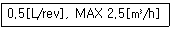
- 계량실 l주기 체적이 0.5m3이고, 시간당 사용 최대 유량이 2.5m3이다.
- 계량실 1주기 체적이 0.5L이고, 시간당 사용 최대 유량이 2.5m3이다.
- 계량실 전체 체적이 0.5m3이고, 시간당 사용 최소 유량이 2.5m3이다.
- 계량실 전체 체적이 0.5L이고, 시간당 사용 최소 유량이 2.5m3이다.
(정답률: 72%)
92. 가스미터를 통과하는 동일량의 프로판 가스의 온도를 겨울에 O℃, 여름에 32℃로 유지한다고 했을 때 여름철 프로판 가스의 체적은 겨울철의 얼마 정도인가? (단, 여름철 프로판 가스의 체적 : V1, 겨울철 프로판 가스의 체적 : V2이다.)
- V1＝0.80 V2
- V1＝0.90 V2
- V1＝1.12 V2
- V1＝1.22 V2
(정답률: 50%)
93. 온도에 대한 설명으로 틀린 것은?
- 물의 삼중점(0.01℃)은 273.16K로 정의하였다.
- 온도는 일반적으로 온도변화에 따른 물질의 물리적 변화를 가지고 측정한다.
- 기체온도계는 대표적인 2차 온도계이다.
- 온도란 열 즉 에너지와는 다른 개념이다.
(정답률: 57%)
94. 오르자트(Orsat) 가스분석기의 특정으로 틀린 것은?
- 연속측정 이 불가능하다.
- 구조가 간단하고 취급이 용이하다.
- 수분을 포함한 습식배기 가스의 성분 분석이 용이하다.
- 가스의 흡수에 따른 흡수제가 정해져 있다.
(정답률: 52%)
95. 서미스터 등을 사용하고, 응답이 빠르고 저온도에서 중온도 범위 계측에 정도가 우수한 온도계는?
- 열전대 온도계
- 전기저항식 온도계
- 바이메탈 온도계
- 압력식 온도계
(정답률: 40%)
96. 주로 탄광 내 CH4 가스의 농도를 측정하는데 사용되는 방법은?
- 질량분석법
- 안전등형
- 시험지법
- 검지관법
(정답률: 68%)
97. 가스성분 중 탄화수소에 대하여 감응이 가장 좋은 검출기는?
- TCD
- ECD
- TGA
- FID
(정답률: 74%)
98. 계측기의 기차(lnstrument Error)에 대하여 가장 바르게 나타낸 것은?
- 계측기가 가지고 있는 고유의 오차
- 계측기의 측정값과 참값과의 차이
- 계측기 검정 시 계량점에서 허용하는 최소 오차한도
- 계측기 사용 시 계량점에서 허용하는 최대 오차한도
(정답률: 64%)
99. 모발습도계에 대한 설명으로 틀린 것은?
- 재현성이 좋다.
- 히스테리시스가 없다.
- 구조가 간단하고 취급이 용이하다.
- 한냉지역에서 사용하기가 편리하다.
(정답률: 74%)
100. 응답이 빠르고 일반 기체에 부식되지 않는 장점을 가지며 급격한 압력변화를 측정하는데 가장 적절한 압력계는?
- 피에조 전기압력계
- 아네로이드 압력계
- 벨로우즈 압력계
- 격막식 압력계
(정답률: 63%)
물의 동점성계수가 공기의 동점성계수보다 작기 때문에 물은 공기보다 더욱 빠르게 흐릅니다. 따라서 물은 난류로 흐르게 되고, 공기는 느리게 흐르기 때문에 층류로 흐르게 됩니다.